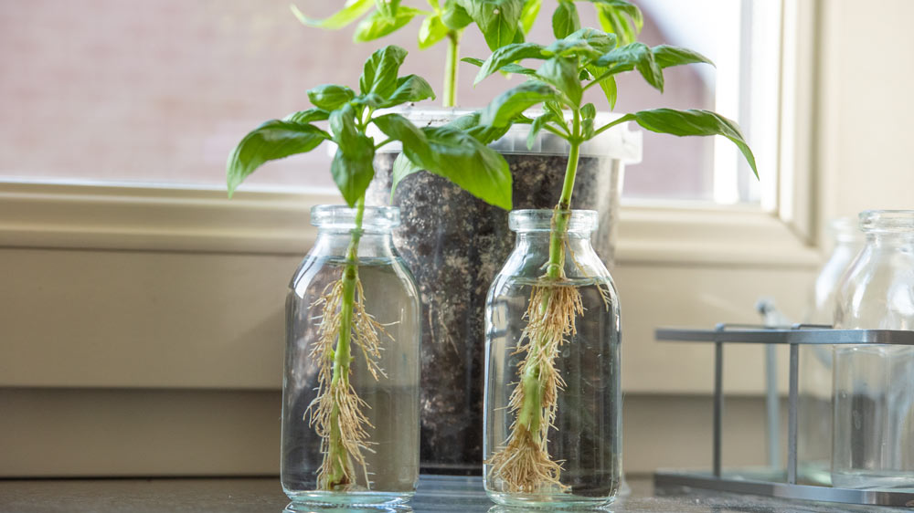

Genbrug af madrester: Sådan dyrker du nye planter

Genbrug af madrester er ikke kun en bæredygtig praksis, men det kan også hjælpe dig med at dyrke dine egne planter derhjemme. Hvis du har grøntsager eller krydderurter tilovers, kan du ofte genbruge dem til at starte en helt ny plante...
Hvorfor er genbrug af madrester en god idé?
Genbrug af madrester reducerer madspild og giver dig mulighed for at udnytte ressourcerne fuldt ud. Det er også en billig måde at få flere planter på, især hvis du bor i en lille bolig uden meget plads til en have.
Sådan genbruger du grøntsagsrester
Mange grøntsager, såsom løg, hvidløg, kartofler og selleri, kan nemt dyrkes igen. Her er et par eksempler på genbrug af madrester til planteavl:
- Løg: Skær roden af løget og plant den i en potte med jord. Vand jævnligt, og du vil snart se nye løgspire vokse op.
- Hvidløg: Du kan plante et fed af hvidløg i jorden. Det vil spire og vokse til en hel plante, som du kan bruge i madlavningen.
- Kartofler: Kartofler med spirer kan skæres i mindre stykker, som hver har en spire. Plant dem i jorden, og du vil snart få nye kartoffelplanter.

Vedligeholdelse af dine planter
Når du først er kommet i gang med genbrug af madrester til planteavl, er det vigtigt at pleje dine nye planter ordentligt. Sørg for at vande dem regelmæssigt og giv dem nok sollys.
Afsluttende tanker
Genbrug af madrester er en smart måde at reducere madspild på, samtidig med at du kan dyrke nye planter derhjemme. Giv det et forsøg næste gang, du har rester i køkkenet!